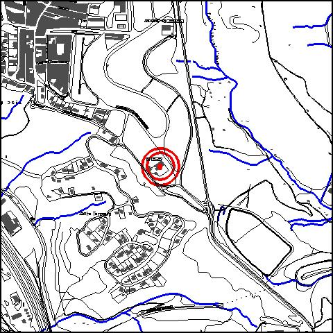
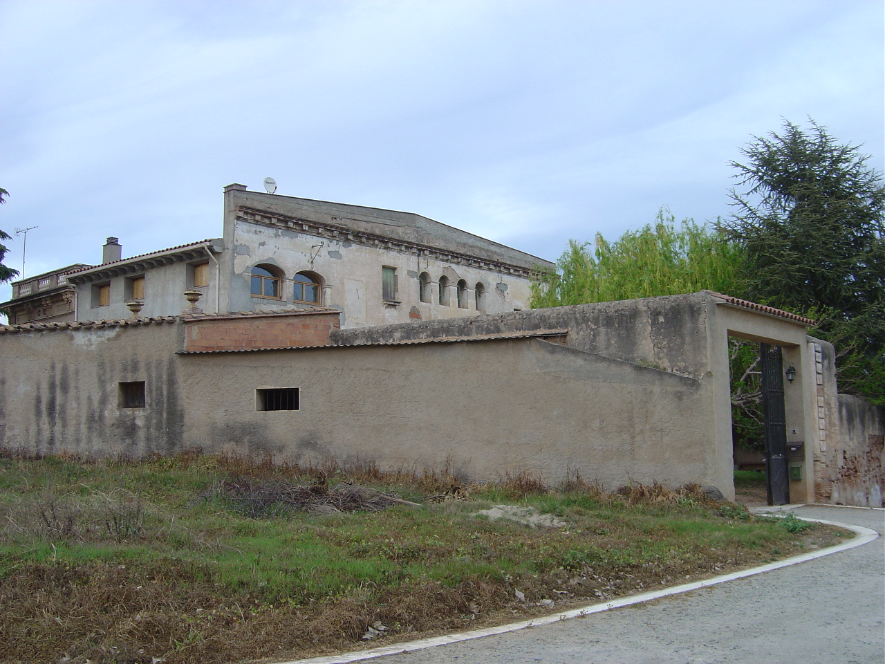

|  |  |
Nom de l’element: Ca n’Amat
Clau d’identificació: A.14
Nucli o indret: Nucli urbà (Av. Molins de Rei).
UTM: X= 415.278, Y= 4.591.560, 110 m snm.
Règim del sòl: sòl urbà.
1.1. Època de construcció i tipologia:
Antiga masia catalana datada del 1137, amb reformes neoclàssiques i la façana sud amb estil modernista. Els murs són de mamposteria i pedra i la coberta, a dues aigües, de fusta i teules. L’edificació és de planta quadrada, amb planta baixa i dues plantes pis a la zona de la façana sud, reduint-se atenent al desnivell a la part posterior. La façana s’ha modificat creant-se una frontal recte que tapa el pendent de la coberta amb un fris de remat. La façana nord d’una planta s’ha construït posteriorment, d’estil neoclàssica amb una disposició d’obertures ordenades amb una decoració de pilastres i frontons en cada obertura i un arquitrau que remata la façana junt amb una balustrada. El cos principal de la masia està subdividit en dues parts. La zona sud-oest, on s’hi ha realitzat intervencions de rehabilitació, entre els quals destaca el canvi de coberta amb un nou embigat. Aquesta part de la masia és habitatge. La zona sud-est està deteriorada principalment per la coberta. Existeixen goteres i l’activitat és mínima. Té diversos magatzems annexes, un molí d’aigua i un porxo.
1.2. Estat de conservació:
En general, mitjà. Les cobertes, el paviment, les obertures i els acabats interiors es troben en un estat mitjà de conservació. Les estructures portants, els forjats, les voltes i les façanes estan en bon estat. Hi ha humitats en certs cossos.
1.3. Ús actual:
Habitatge.
1.4. Accés:
Accés fàcil des de l’Av. Molins de Rei (nucli urbà).
Masia del 1137, amb reformes neoclàssiques i la façana sud d’estil modernista.
3.1. Usos admesos:
nihabitatge, residencial, hoteler (excepte aparthotel; i amb un màxim de 30 places), oficines i serveis, educatiu, recreatiu cultural i social, recreatiu de restauració, esportiu.
3.2. Condicions d’ordenació:
Segons zona 8b (veure Normes Urbanístiques)
3.3. Accés i serveis:
Accés des de l’Av. Molins de Rei (nucli urbà).
BPU (Bé Protegit Urbanísticament)